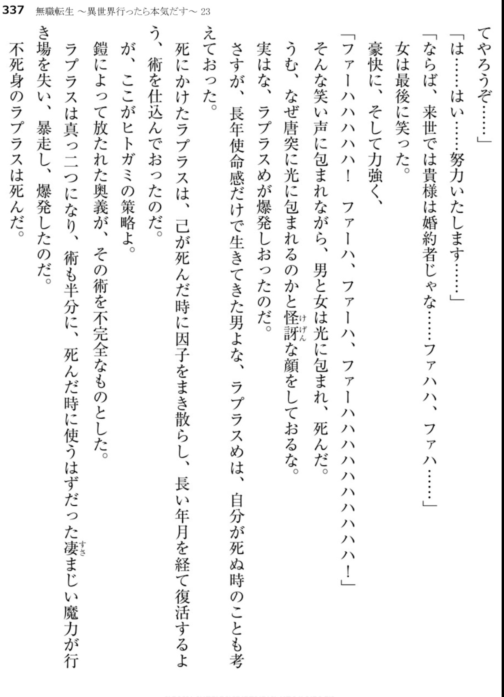

The badigadi extra in the light novel vol 23 says the hole is formed by a defect in the magical process. Translation of the relevant part -
"Surrounded by that laughter, the man and the woman died with light eneveloping them. Hmm, you are probably making a doubtful face thinking why did a light suddenly eneveloped us.
To tell you the truth, laplace went out with an explosion. As one would expect, this laplace person who was living for a long time with a sense of duty thought about his death as well. He prepared a technique so that he can reincarnate after a time, by spreading his factors at his time of death.
And this is where hitogami's trick comes in.
The secret technique released by the armor made that technique incomplete. The technique split along with laplace and the tremendous mana that was supposed to be used for the technique went wild without a place to go and caused an explosion. The immortal laplace died"